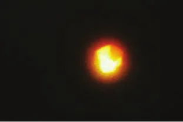
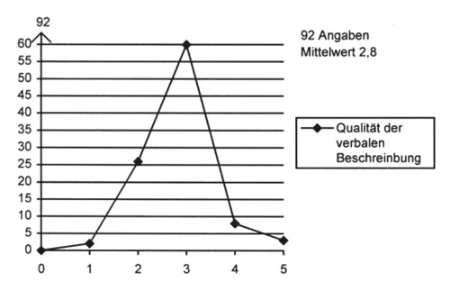
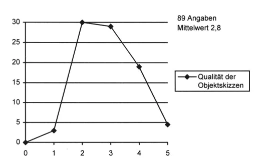
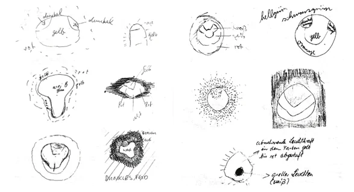

La question de la fiabilité des descriptions d'événements aériens inhabituels par des témoins oculaires est au cœur des données sur les ovnis. L'auteur a mené une expérience simple pour évaluer l'exactitude des descriptions de stimuli optiques inhabituels par des témoins oculaires.
Nous sommes souvent confrontés à la question de savoir dans quelle mesure la description d'un objet dans le ciel par un témoin coïncide avec le stimulus réel. Les erreurs de perception et les idées tirées de livres populaires et de programmes de télévision, ou un intérêt pour les ovnis, vont-ils nettement déformer tout compte rendu d'une telle expérience, rendant ainsi impossible une reconstitution exacte de l'objet ? Telles étaient nos préoccupations.
Pour en savoir plus, j'ai mené une petite expérience. Elle n'a jamais eu vocation à être une étude représentative et les résultats refléteraient donc une certaine incertitude. J'étais toutefois certain que ces tendances devaient néanmoins être prises en compte lors des futures enquêtes sur des cas.
Nous avons mené l'expérience en partenariat à la fois avec le Réseau central de recherche sur les phénomènes célestes extraordinaires (CENAP) à Mannheim, en Allemagne, et le météorologue Dr Alexander Keul de l'université de Salzbourg. Sous ma direction, le projet de recherche a tenté de déterminer dans quelle mesure nous pouvons nous fier à la perception des témoins oculaires. J'ai organisé l'expérience et fourni le matériel nécessaire à sa réalisation. Tous les groupes impliqués ont suivi le même protocole pour en garantir la sécurité, tandis que le Dr Keul était chargé de l'analyse brièvement présentée ci-dessous.

À différentes occasions, on a montré à un groupe de plusieurs personnes une diapositive en couleur d'une montgolfière dans le ciel (voir Figure 1 : photo de la montgolfière) pendant 10 secondes. On a montré à d'autres personnes un tirage couleur de la même photo au format A4, également pendant 10 secondes.Le format A4 est le format de papier standard de 210 mm x 297 mm utilisé dans le monde entier, sauf en Amérique du Nord et au Canada.
On a ensuite demandé aux participants de remplir un petit questionnaire et de dessiner un croquis de l'objet. Au total, nous avons obtenu 128 questionnaires remplis, dont 100 provenaient de tests en groupes d'environ 25 personnes chacun.
Des études anglaises, américaines et autrichiennes publiées auparavant ont montré que les témoins rapportent souvent un large éventail d'affirmations pour décrire des faits objectifs. Certains rapportent qu'une expérience de 10 secondes n'a duré que 5 secondes, tandis que d'autres rapportent que le même incident a duré 20 secondes. Ces composantes subjectives variant si largement, les résultats devaient être vérifiés ou autrement améliorés en augmentant le nombre de participants.
L'analyse qui suit, due au Dr Alexander Keul, repose sur quatre expériences utilisant des diapositives en couleur et sur des données recueillies au moyen de 97 questionnaires.[Note de RR0] Les quatre groupes décrits ci-dessous totalisent 28 + 23 + 24 + 20 = 95 sujets, et non 97. Une expérience a été menée par Werner Walter du CENAP, avec des données recueillies auprès de 28 sujets, une autre par Walter L Kelch à Coblence avec 23 sujets, une troisième par Edgar Wunder avec 24 sujets qui assistaient à une conférence sceptique, et la quatrième par l'auteur de ce rapport (Hans-Werner Peiniger) avec 20 sujets qui assistaient à une réunion. À toutes ces occasions, les gens savaient que l'on testait leur réaction à une observation simulée. Le groupe Walter comptait 24 hommes et seulement 4 femmes, âgés de 10 à 52 ans (moyenne 22,2). Treize étaient de jeunes élèves, 4 des étudiants, 3 exerçaient des professions techniques et 2 étaient employés de commerce. Le groupe Kelch comptait 22 hommes et une femme âgés de 20 à 29 ans (moyenne 22,7 ans), exerçant des professions très diverses. L'expérience Peiniger comprenait des données de 18 hommes et 2 femmes, âgés de 23 à 66 ans (moyenne 35,9), exerçant des professions diverses. Le groupe Wunder comptait 14 hommes et 9 femmes (plus un questionnaire de sujet où le sexe n'était pas précisé). Les âges allaient de 11 à 19 ans, tous de jeunes élèves. Tous les participants n'ont pas rempli chaque rubrique du questionnaire, de sorte que les chiffres peuvent ne pas correspondre aux totaux.
Comme indiqué plus haut, la diapositive en couleur a été montrée pendant exactement 10 secondes. Cette durée a ensuite été estimée par les participants comme le montre le Tableau 1 (durée estimée).
| Groupe | Durée estimée | Moyenne |
|---|---|---|
| Walter | 4 à 20 | 9,8 |
| Kelch | 4 à 30 | 12,0 |
| Peiniger | 1,5 à 30 | 9,2 |
| Wunder | 2 à 30 | 7,5* |
| * Test annoncé à l'avance, sans l'élément de surprise | ||
Les quatre groupes montrent des résultats similaires. Certains sujets ont excessivement surestimé la durée, tandis que d'autres l'ont sous-estimée dans une mesure tout aussi excessive. Les résultats sont répartis sur une plage nettement large. Nous avons toutefois pu calculer facilement une valeur moyenne bien plus proche des conditions réelles. Une conclusion possible est qu'avec des témoins isolés, il faut s'attendre à des erreurs considérables dans l'estimation de la durée, tandis que des groupes de témoins plus importants tendent à révéler davantage d'exactitude dans la valeur moyenne.
Nous avons demandé aux participants d'écrire une courte description verbale de ce qu'ils venaient de voir. Comme le Dr Alexander Keul ne voulait pas perdre de temps à mener une analyse qualitative qui aurait pu s'éterniser, il a simplement réparti les textes selon l'échelle de notation suivante : une très bonne correspondance entre la photo et la description reçoit la note 1, une bonne correspondance entre la photo et la description la note 2, les descriptions neutres (vagues) sont notées 3, une correspondance moyenne entre la photo et la description reçoit la note 4, et une correspondance nettement erronée entre la photo et la description est notée 5. Le Tableau 2 (Qualité de la description verbale) montre les résultats des différents groupes, et la Figure 2 (Qualité des descriptions verbales), avec 92 réponses et une valeur moyenne de 2,8, représente ceux de l'ensemble des participants.
| Groupe | 1 | 2 | 3 | 4 | 5 | Moyenne |
|---|---|---|---|---|---|---|
| Walter | 0 x | 10 x | 17 x | 0 x | 0 x | 2,6 |
| Kelch | 0 x | 8 x | 14 x | 1 x | 0 x | 2,7 |
| Peiniger | 2 x | 6 x | 5 x | 5 x | 3 x | 3,0 |
| Wunder | 0 x | 2 x | 17 x | 20 x[Note de RR0] Telle qu'imprimée, la ligne Wunder totalise 39 notes pour un groupe de 24 sujets, et leur moyenne serait de 3,5, et non 3,0. Avec 2 notes de 4 au lieu de 20, la ligne totalise 21 notes de moyenne 3,0, les quatre groupes les 92 réponses de la Figure 2 avec une moyenne de 2,8, le taux de bonnes descriptions du groupe Wunder dans le Tableau 4 (2 sur 21, 10 %) est retrouvé, ainsi que le point de la Figure 2 pour la note 4 (8 notes). Le 20 imprimé est donc très probablement une coquille pour 2. | 0 x | 3,0 |

Dans son analyse, le Dr Keul déclare : Ce classement général (et subjectif) des descriptions verbales de
l'objet montre que les très bonnes descriptions sont aussi rares que les comptes rendus complètement faux. La
plupart sont soit bonnes, soit vagues.
On a également demandé aux participants de dessiner ce qu'ils avaient vu. Les groupes Walter et Peiniger l'ont fait en noir et blanc, tandis que les groupes Kelch et Wunder ont utilisé des crayons de diverses couleurs. Le même système d'évaluation a été appliqué ici. Dans quelle mesure les croquis ressemblaient-ils à la photo ? Très bon, excellent ou riche en détails est noté 1 ; bon est noté 2 ; vague est noté 3 ; moyen, sans détails est noté 4 ; et complètement faux est noté 5. Cette analyse (sans tenir compte des couleurs, qui étaient absentes dans deux des groupes) a donné les valeurs présentées dans le Tableau 3 (Qualité des croquis de l'objet). La Figure 3 (Qualité des croquis des témoins), avec 89 réponses et une valeur moyenne de 2,8, montre les valeurs fournies par l'ensemble des participants.[Note de RR0] Les lignes du Tableau 3 totalisent 93 notes (3, 31, 34, 20 et 5 pour les notes 1 à 5), dont la moyenne est de 2,9, et non 89 notes de moyenne 2,8 ; les points de la Figure 3 (environ 3, 30, 29, 19 et 5) ne correspondent pas exactement au tableau non plus.
| Groupe | 1 | 2 | 3 | 4 | 5 | Moyenne |
|---|---|---|---|---|---|---|
| Walter | 0 x | 8 x | 9 x | 7 x | 4 x | 3,3 |
| Kelch | 2 x | 9 x | 8 x | 4 x | 0 x | 2,6 |
| Peiniger | 1 x | 5 x | 9 x | 5 x | 1 x | 3,0 |
| Wunder | 0 x | 9 x | 8 x | 4 x | 0 x | 2,8 |

Dans l'évaluation de l'exactitude des croquis, les contours de l'objet comme ses détails ont tous été pris en compte. Le Dr Keul a conclu qu'il n'y avait pas de différences significatives avec l'évaluation des descriptions verbales. Il y avait quelques croquis excellents et quelques-uns complètement faux. La plupart des croquis pouvaient être classés comme bons ou moyens.
En calculant les pourcentages de comptes rendus verbaux et de croquis bons et très bons, nous arrivons aux valeurs présentées dans le Tableau 4 :
| Groupe | Texte | Pourcentage | Image | Pourcentage |
|---|---|---|---|---|
| Walter | 10 | 37 % | 8 | 29 % |
| Kelch | 8 | 35 % | 11 | 48 % |
| Peiniger | 8 | 38 % | 6 | 29 % |
| Wunder* | 2 | 10 % | 9 | 42 % |
| * Les tests avaient été annoncés à l'avance, les participants étaient tous de jeunes élèves. | ||||

Comme on le voit, au mieux un tiers à la moitié seulement des descriptions et des croquis peuvent être qualifiés de « précis » (très bons et bons). Comment ces résultats peuvent-ils servir à l'évaluation des comptes rendus d'observation ? Malheureusement, sans rien à quoi les comparer, nous ne pouvons pas dire à quel groupe de personnes appartient notre témoin hypothétique. C'est un problème qui exige des recherches supplémentaires.
Enfin, on a demandé aux participants d'identifier l'objet. Comme indiqué plus haut, l'objet était en réalité une montgolfière en vol.
Dans le groupe Walter : 16 sujets lui ont attribué une origine conventionnelle-technologique ; 3 y ont vu une fausse photo ; et 3 n'avaient aucune idée de ce qu'était l'objet.
Dans le groupe Kelch : 9 sujets lui ont attribué une origine conventionnelle-technologique ; 5 n'avaient aucune idée de ce qu'était l'objet ; 4 y ont vu un ovni ; et 2 un phénomène naturel.
Dans le groupe Peiniger : 8 sujets lui ont attribué une origine conventionnelle-technologique (dont 1 sujet qui y a vu un ballon) ; 4 n'avaient aucune idée de ce qu'était l'objet ; 5 y ont vu un phénomène naturel ; et 3 un ovni.
Dans le groupe Wunder : 18 sujets lui ont attribué une origine conventionnelle-technologique (dont 1 sujet qui y a vu un ballon) ; et 2 un phénomène naturel.
Par conséquent, la majorité des sujets a correctement affirmé que l'objet observé pouvait être identifié comme ayant une explication conventionnelle.
L'étude de la qualité des comptes rendus de témoins a pour l'essentiel confirmé les études antérieures de Grande-Bretagne, des États-Unis et d'Autriche. Le Dr Alexander Keul a résumé comme suit les résultats les plus importants pour l'enquête critique sur les ovnis :
Les groupes de personnes à qui l'on demande d'évaluer un laps de temps « passionnant » tendent à se disperser largement. Seule une valeur moyenne peut être utilisée pour l'exactitude.
Les descriptions verbales et les croquis de l'objet tendent à être « moyens » dans leur majorité (de bons à vagues). Seuls un tiers à la moitié peuvent être considérés comme exacts, mais quel jeu de données faut-il retenir ? Une bonne description ne peut être obtenue que par l'analyse statistique des comptes rendus d'un groupe, et ne devrait jamais être tenue pour exacte lorsqu'il n'y a qu'un seul témoin.
(Traduit de l'allemand par Ulrich Magin.) Peiniger, Hans-Werner: “Wie ein Heißluftballon zum UFO Wird”, in Das Rätsel: Unbekannte Flugobjekte, Rastatt, Germany: Moewig, , pp. 51–59